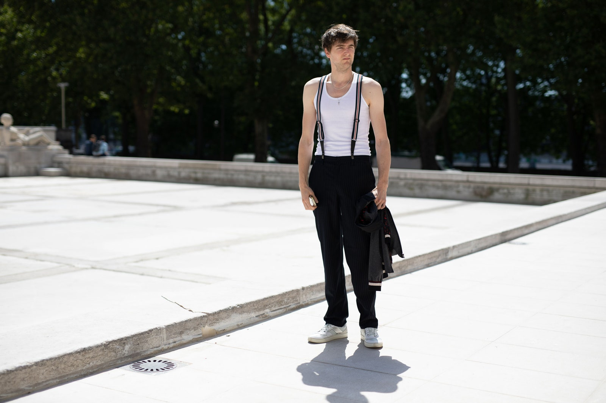

MODA
30 de noviembre de 2021 | Por Sheril Celada
Tirantes con clip-on
Los tirantes de tipo clip-on son probablemente los más conocidos ya que se pueden usar con cualquier tipo de pantalón (siempre y cuando vaya con el estilo). Estos tienen unos clips en las puntas, los cuales toman el pantalón y lo sostienen. El clip puede ser de distintos tipos con algunos de cocodrilo y otros más tradicionales. Por lo general, los de clip-on son ideales para looks más casuales, encajando con cualquier look, por lo que sólo tienes que decidir por un tamaño y color.
Tirantes con botones
Los tirantes con botones tienen unos hoyos para botón en las puntas, las cuales pueden ser de diferentes tipos, desde algunas que los incluyen en los tirantes, hasta los que tienen una parte extra (a veces de cuero) que le da un aspecto diferente al atuendo, con un espacio que hace que los tirantes “empiecen” desde una mayor altura. Por lo general, son vistos más para atuendos formales, siendo ideales para un look de hombre de negocios o para la oficina, pero también para bodas o cenas formales.
Algunos de estos tirantes incluyen botones para que se puedan coser al pantalón, pero se debe hacer con cuidado.
Tirantes con clip de gatillo (o gancho)
Los tirantes con clip de gatillo tienen en las puntas un clip de ese tipo que se puede sostener a cualquiera de las pretinas del pantalón, por lo que se requiere una prenda que tenga estos elementos. Su aspecto es mucho más casual y solemos verlo en tirantes de cuero para que se sostengan mejor. El clip suele ser de metal simple, y es importante elegir uno de buena calidad para evitar problemas con el tiempo.
Tirantes de tipo X
Son los tirantes que forman una X en la parte trasera, cruzando los dos lados. Esta es la forma común de usarlos, aunque algunos deciden ponérselos de forma paralela sin el cruce en la parte de la espalda.
Tirantes de tipo Y
Los tirantes forman una letra Y en la espalda teniendo una sola banda en parte trasera, dividiéndose en dos en la parte media.
Por otra parte, algunos dividen los cinturones en casuales, formales, de traje, entre otros, pero es muy fácil identificarlos, ya que el estilo, los colores y el tipo definen bastante si son para una atuendo casual o formal, y los de traje suelen ser de clip.
De igual forma, es importante considerar que existen diferentes tamaños de tirantes con algunos siendo más amplios que otros, por lo que es importante elegir uno que vaya con el tipo de cuerpo, y hasta con el tipo de atuendo con los amplios siendo vistos como una elección ideal para un look formal (aunque si eres muy delgado lo mejor es evitarlos).
Por otra parte, algunos dividen los tirantes en cuanto a materiales, separando los de cuero de otros, pero en realidad actualmente existen de tan distintos tipos que no hay una forma de catalogarlos. Sólo podemos decir que están las opciones formales y casuales, y tu decidirás la mejor forma de usarlos.
2do video
Intro
| 15 de agosto de 2021 |
Concepto : Es la intro actual de el canal de Ema "Cultura General" que estará bigente solo por un año. Hay unos tambores de fondo a los cuales los acompañan una guitarra electrica y ya de último se puede escuchar la voz de Aarón (El mejor amigo de Ema) y lo que dice Aarón en la intro es "QUE TE VALGA VERGA MAJE" lo cual motivo a Ema a crear un canal en YouTube y hacer su primer video.
Porque lo motivo : "Porque lo que Aarón dijo fue basicamente como "QUE NO TE IMPORTE LO QUE DIGAN LOS DEMÁS" o "SIMPLEMTE SOLO HAZLO Y ATREVETE" y me pegaron bien profundo esas palabras porque una de las cosas de las cuales la gente se arrepienten en su vida es no averlo intentado, se quedan con el "¿QUE HUBIERA PASADO SI LO INTENTAVA?, ¿ESTARÍA EN EL LUGAR QUE ESTOY AHORA MISMO?, ¿SERÍA FELIZ SI LO HUBIERA INTENTADO?" no quiero arrepentirme de nada, el día de mi muerte sabré porque viví" Dijo Ema al preguntarle por que lo inspirarón esas palabra tan sabias de Aarón.
Ver más3er video
Juego Salvar a mi hermana
| 15 de agosto de 2021 |
Concepto : Es un tutorial acerca de uno de los juegos más famosos y divertidos de juegos diarios el cual es "salvar a mi hermana".
En el video Ema da una clase de tutorial acerca de los comendos del juego y de como salvar a tu hermana, claro si es que te atreves a jugarlo.
Ver más